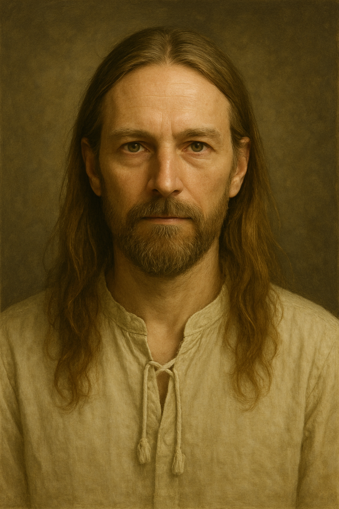

Guru Jára – Duchovní učitel, léčitel, nebo manipulátor?

Otakar Březina, veřejně známý jako Guru Jára, byl dlouhá léta vnímán jako duchovní učitel a léčitel. Jeho metody a filozofie přitahovaly stovky následovníků z různých koutů světa. Založil vlastní duchovní školu, cestoval, psal knihy. Ale za mystikou se skrýval i stín – obvinění z manipulace, zneužívání a později i trestní stíhání. Kdo byl Guru Jára? Osvícený léčitel, nebo mistr manipulace?
Vzestup duchovního vůdce
Otakar Březina se začal veřejně prezentovat jako Guru Jára na přelomu 90. let. Jeho učení kombinovalo prvky tantrického buddhismu, mystiky, magie a práce s energií. Hlásal duchovní očistu skrze tělesnou zkušenost, což zahrnovalo i intimní terapie – často vedené právě jím. Vznikl kolem něj okruh oddaných žáků, kteří ho považovali za duchovní autoritu a léčitele.
Obvinění a soudní procesy
V roce 2007 začalo být jeho jméno skloňováno v souvislosti s trestním oznámením. Několik žen tvrdilo, že byly při "očistných rituálech" zneužity. Tvrdily, že byly v manipulativním psychickém stavu, kdy nebyly schopny dát plně vědomý souhlas. Guru Jára obvinění odmítal, považoval je za útok proti svobodě víry a za nepochopení tantrických praktik.
V roce 2012 byl poprvé odsouzen za znásilnění. Následně se ukryl v zahraničí – cestoval po Asii a Jižní Americe, kde pokračoval ve své činnosti. V roce 2014 byl zadržen na Filipínách a vydán do České republiky. V roce 2018 byl pravomocně odsouzen k desetiletému trestu odnětí svobody.
Sekta nebo duchovní škola?
Jeho komunita, známá jako Poetrie, byla médii často označována za sektu. Kritici upozorňovali na uzavřenost skupiny, na charismatickou kontrolu, kterou Guru Jára měl nad svými žáky, i na finanční a sexuální závislosti. Podle obhájců šlo ale o dobrovolné zapojení do duchovního systému, který nebyl pro každého a byl špatně pochopen.
Mezinárodní přesah
Guru Jára měl následovníky nejen v Česku, ale i v Polsku, Brazílii, Indii a dalších zemích. Jeho knihy byly překládány, semináře pořádány online i fyzicky. Tvrdil, že je pronásledován za svobodu duchovního projevu. Jeho zastánci mluvili o justiční zvůli, kritici o nebezpečné manipulaci.
Mýtus, realita a pravda
Případ Guru Járy opět nastolil otázky: kde končí svoboda víry a začíná trestný čin? Je duchovní autorita odpovědná za emocionální a tělesné hranice svých žáků? A lze vůbec objektivně posoudit vztah učitele a žáka v duchovní sféře?